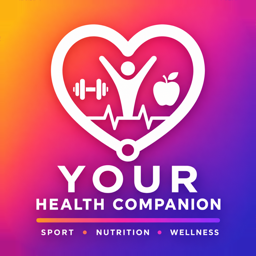

Your Health Companion AI
Privacy Policy
Informativa sulla privacy
Your Health Companion AI — last updated 20 September 2026
In short: your data stays on your iPhone and Apple Watch. No ads, no tracking, no selling of data. Health data never leaves your devices. The only information sent to a server is a technical token, and only if you turn notifications on.
1. Who we are
Your Health Companion AI (“the App”) is developed by Fabrizio Bacchin, who is the data controller. For any privacy question, contact bacchin@tiscali.it.
2. Data stored on your devices
Everything you create in the App — your profile (name, age, sex, height, weight, goals), tracked activities, laps and GPS routes, training plans, gym workouts and routines, food diary, custom portions and coaching insights — is stored locally on your iPhone in the App's private database. It is not transmitted to us or to any third party.
The Apple Watch app records your runs on the Watch and exchanges them directly with your iPhone through Apple's own connection between the two devices. Files you choose to import, such as a workout export from another app, are read on the device and are not uploaded anywhere.
3. Apple Health (HealthKit)
With your explicit permission, the App reads data from Apple Health (steps, heart rate, resting heart rate, active energy, exercise minutes, activity rings, body weight, workouts and their laps) and writes data to it (workouts, routes, distance, active energy, body weight).
- Health data is used solely to display your metrics and generate on-device insights.
- Health data never leaves your devices and is never shared with, sold to, or disclosed to third parties.
- Health data is never used for advertising, marketing or data-mining purposes.
- You can revoke access at any time in Settings → Privacy & Security → Health.
4. Location
GPS is used only while you record an outdoor activity, to draw your route and compute distance and pace. During a recording you started, tracking continues with the screen off or the App in the background, and stops when you end the activity. Routes are stored locally (and, if you allow it, in Apple Health as workout routes). Your location is never sent to our servers or to third parties.
5. Camera
The camera is used exclusively to scan food barcodes. No photos are captured, stored or transmitted.
6. Voice alerts and Live Activities
Spoken alerts and the voice coach are generated on the device by the system speech synthesiser: the App does not use the microphone and records no audio. The activity shown on the Lock Screen and in the Dynamic Island is displayed by iOS from data that stays on your iPhone.
7. Notifications
Reminders for workouts, meals and the eating window are scheduled locally on your device. If you allow notifications, the App also registers your device with our push notification provider, Back4App, on servers located in the European Union, so that service messages can be delivered. The registration contains a random installation identifier, the push token issued by Apple, your time zone, your language and region setting, and the App version. It contains no name, e-mail address, health data, location or diary content, and it is used only to deliver notifications. You can turn notifications off at any time in Settings → Notifications, and ask us to delete the registration by writing to bacchin@tiscali.it.
8. Food database (Open Food Facts)
When you search for a food or scan a barcode, the App sends the search text or barcode number to Open Food Facts, a public non-profit food database, to retrieve nutrition information. These requests contain no personal identifiers and are not linked to your identity or health data.
9. Future features: accounts and sync
Future versions may offer an optional account and cloud synchronisation (hosted in the European Union). If introduced, these features will be strictly opt-in and this policy will be updated beforehand.
10. Data retention and deletion
- Erase all App data at any time from Profile → “Delete all data”.
- Uninstalling the App removes its local database, on the iPhone and on the Apple Watch.
- Data written to Apple Health remains under your control in the Health app.
- The push registration described in section 7 is deleted on request.
11. Children
The App is not directed at children under 13 and does not knowingly collect personal information from them.
12. Not medical advice
The App provides general wellness information and is not a medical device. Training plans, carbohydrate guidance, macro schemes and the fasting window are informative: the App does not provide medical advice, diagnosis or treatment. Always consult a qualified professional for medical or nutritional guidance.
13. Your rights (GDPR)
Because your data is stored on your devices, you exercise your rights of access, rectification and erasure directly within the App. For the push registration, or for any other request, contact bacchin@tiscali.it. You also have the right to lodge a complaint with your data protection authority.
14. Changes to this policy
We may update this policy as the App evolves. Material changes will be reflected on this page with a new date.
Your Health Companion AI — ultimo aggiornamento 20 settembre 2026
In breve: i tuoi dati restano sul tuo iPhone e sul tuo Apple Watch. Niente pubblicità, niente tracciamento, nessuna vendita di dati. I dati di salute non lasciano mai i tuoi dispositivi. L'unica informazione inviata a un server è un token tecnico, e solo se attivi le notifiche.
1. Chi siamo
Your Health Companion AI (“l'App”) è sviluppata da Fabrizio Bacchin, che è il titolare del trattamento. Per qualsiasi domanda sulla privacy scrivi a bacchin@tiscali.it.
2. Dati memorizzati sui tuoi dispositivi
Tutto ciò che crei nell'App — profilo (nome, età, sesso, altezza, peso, obiettivi), attività tracciate, frazioni e percorsi GPS, piani di allenamento, allenamenti e schede di palestra, diario alimentare, porzioni personalizzate e insight del coach — è salvato localmente sul tuo iPhone, nel database privato dell'App. Non viene trasmesso né a noi né a terzi.
L'app per Apple Watch registra le corse sull'orologio e le scambia direttamente con il tuo iPhone attraverso il collegamento di Apple tra i due dispositivi. I file che scegli di importare, per esempio l'esportazione degli allenamenti da un'altra app, vengono letti sul dispositivo e non sono caricati altrove.
3. Apple Salute (HealthKit)
Con il tuo permesso esplicito, l'App legge dati da Apple Salute (passi, frequenza cardiaca, frequenza a riposo, energia attiva, minuti di esercizio, anelli attività, peso corporeo, allenamenti e relative frazioni) e vi scrive dati (allenamenti, percorsi, distanza, energia attiva, peso).
- I dati di salute sono usati solo per mostrarti le tue metriche e generare insight sul dispositivo.
- I dati di salute non lasciano mai i tuoi dispositivi e non vengono mai condivisi, venduti o comunicati a terzi.
- I dati di salute non sono mai usati per pubblicità, marketing o data mining.
- Puoi revocare l'accesso in ogni momento da Impostazioni → Privacy e sicurezza → Salute.
4. Posizione
Il GPS viene usato solo mentre registri un'attività all'aperto, per disegnare il percorso e calcolare distanza e ritmo. Durante una registrazione che hai avviato tu, il tracciamento prosegue a schermo spento o con l'App in secondo piano, e si ferma quando termini l'attività. I percorsi sono salvati localmente (e, se lo consenti, in Apple Salute come percorsi allenamento). La tua posizione non viene mai inviata a server nostri o di terzi.
5. Fotocamera
La fotocamera serve esclusivamente a leggere i codici a barre degli alimenti. Nessuna foto viene scattata, salvata o trasmessa.
6. Avvisi vocali e attività in tempo reale
Gli avvisi parlati e il coach vocale sono generati sul dispositivo dalla sintesi vocale di sistema: l'App non usa il microfono e non registra audio. L'attività mostrata sulla schermata di blocco e nella Dynamic Island è visualizzata da iOS a partire da dati che restano sul tuo iPhone.
7. Notifiche
I promemoria di allenamenti, pasti e finestra alimentare sono programmati localmente sul dispositivo. Se consenti le notifiche, l'App registra inoltre il tuo dispositivo presso il nostro fornitore di notifiche push, Back4App, su server situati nell'Unione Europea, per poter recapitare i messaggi di servizio. La registrazione contiene un identificativo casuale dell'installazione, il token push rilasciato da Apple, il fuso orario, la lingua e la regione impostate e la versione dell'App. Non contiene nome, indirizzo e-mail, dati di salute, posizione né contenuti del diario, ed è usata soltanto per recapitare le notifiche. Puoi disattivare le notifiche in ogni momento da Impostazioni → Notifiche e chiederci la cancellazione della registrazione scrivendo a bacchin@tiscali.it.
8. Database alimenti (Open Food Facts)
Quando cerchi un alimento o scansioni un codice a barre, l'App invia il testo di ricerca o il numero del codice a Open Food Facts, database alimentare pubblico e senza scopo di lucro, per recuperare i valori nutrizionali. Queste richieste non contengono identificativi personali e non sono collegate alla tua identità o ai tuoi dati di salute.
9. Funzionalità future: account e sincronizzazione
Le versioni future potranno offrire un account facoltativo e la sincronizzazione cloud (con hosting nell'Unione Europea). Se introdotte, saranno rigorosamente facoltative e questa informativa sarà aggiornata prima del rilascio.
10. Conservazione e cancellazione dei dati
- Puoi cancellare tutti i dati dell'App in ogni momento da Profilo → “Cancella tutti i dati”.
- Disinstallando l'App il suo database locale viene rimosso, sull'iPhone e sull'Apple Watch.
- I dati scritti in Apple Salute restano sotto il tuo controllo nell'app Salute.
- La registrazione push descritta al punto 7 viene cancellata su richiesta.
11. Minori
L'App non è rivolta a minori di 13 anni e non raccoglie consapevolmente loro informazioni personali.
12. Non è un dispositivo medico
L'App fornisce informazioni generali sul benessere e non è un dispositivo medico. Piani di allenamento, indicazioni sui carboidrati, schemi di macro e finestra alimentare sono informativi: l'App non fornisce consulenza medica, diagnosi o terapie. Consulta sempre un professionista qualificato per indicazioni mediche o nutrizionali.
13. I tuoi diritti (GDPR)
Poiché i dati risiedono sui tuoi dispositivi, i diritti di accesso, rettifica e cancellazione si esercitano direttamente nell'App. Per la registrazione push, o per qualsiasi altra richiesta, scrivi a bacchin@tiscali.it. Hai inoltre il diritto di proporre reclamo al Garante per la protezione dei dati personali.
14. Modifiche a questa informativa
Potremo aggiornare questa informativa con l'evolversi dell'App. Le modifiche sostanziali saranno pubblicate su questa pagina con una nuova data.